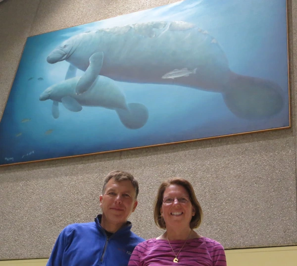

In Search of Wyland Walls

One of the benefits of our search for Wyland murals is that it takes us places we would not normally go. In this case, we headed to the last state that has many walls we have not seen so, we find ourselves in Florida. After spending the weekend in Minneapolis in 10 degree weather, the Florida climate makes us feel right at home.
Florida is a state with 11 walls so it took some planning to figure out how to see as many as possible in one trip. Manatees is in terminal A of the Orlando airport so it made sense to fly into there. I was worried that if the wall was behind security we might not be able to get to it (I doubted TSA would be as friendly as security at the Vancouver aquarium) but it it is in a public area.
Finding a wall in such a large public area is sometimes hard but in this case we found someone who knew where it was and had no trouble finding it. Being inside, Manatees is very well preserved and looks great. A great start to out trip!